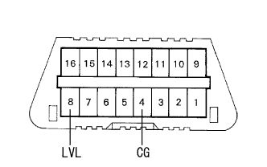
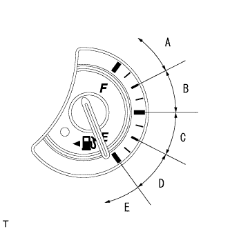

Lighting Registration Settings |
| 1. Headlight Leveling Computer Assembly Initialization Procedure (Initialization Method Without TaSCAN) |
Vehicle Condition Check (*1)
Put the vehicle in the following condition.
Check Warning Display
3 seconds after turning the IG OFF → ON, check the headlight leveling warning light indication in the combination meter.
| Work Description | Warning Display |
|---|---|
| Initialization malfunction or headlight leveling computer assembly replaced (new) | Blinks |
| Height control sensor replacement/removal, suspension replacement, etc. | Goes off |
Initialization Operation
 |
Using SST, connect terminals 8 (LVL) and 4 (CG) of DLC3.
Within 20 seconds after connecting the initialization terminals, operate the light control switch OFF → HEAD 3 times or more. (*2)
Check the warning display.
| Work Description | Warning Display |
|---|---|
| Replace Headlight Leveling Computer Assembly (New) | Blinks 2Hz2 times → blinks 2Hz3 times, then goes off (initialization completed normally) |
| Height control sensor replacement/removal, suspension replacement, etc. | No blinking → blinks 2Hz3 times, then goes off (initialization completed normally) |
| 2. Headlight Leveling Computer Assembly Initialization Procedure (Initialization Method Using TaSCAN) |
Check Vehicle Condition
Put the vehicle in the following condition. (*1)
Check Warning Display
3 seconds after turning the IG OFF → ON, check the headlight leveling warning light indication in the combination meter.
| Work Description | Warning Display |
|---|---|
| Initialization malfunction or headlight leveling computer assembly replaced (new) | Blinks |
| Height control sensor replacement/removal, suspension replacement, etc. | Goes off |
Initialization Operation
With the IG OFF, connect SST (TaSCAN) to the DLC3 connector.
Turn IG ON.
From the SST (TaSCAN) main menu, select "Utility → Auto Leveling → Height Sensor Initialization".
Following the SST (TaSCAN) screen display, press the "Start" button.
 |
Check the needle position of the fuel receiver gauge, and determine the applicable position ID from the current needle position.
| Needle Position | Position ID |
|---|---|
| Needle in range A | FULL to 3/4 or more |
| Needle in range B | Less than 3/4 to 1/2 or more |
| Needle in range C | Less than 1/2 to 1/4 or more |
| Needle in range D | Less than 1/4 to EMPTY or more |
| Needle in range E | EMPTY |
Enter the applicable position ID into SST (TaSCAN) and press the "Register" button.
Check the warning display.
| Work Description | Warning Display |
|---|---|
| Replace Headlight Leveling Computer Assembly (New) | Blinks 2Hz2 times → blinks 2Hz3 times, then goes off (initialization completed normally) |
| Height control sensor replacement/removal, suspension replacement, etc. | No blinking → blinks 2Hz3 times, then goes off (initialization completed normally) |
Following the SST (TaSCAN) screen display, press the "Complete" button.